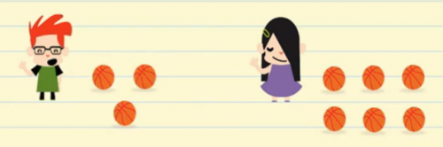
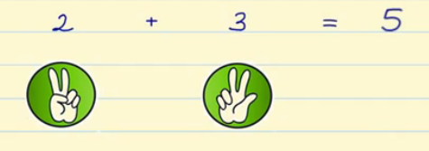

Sumar es juntar 2 o más cosas para saber cuántas hay en total.
Por ejemplo: Pedro tiene 3 balones y María tiene 6. Si juntamos a Pedro y a María, ¿cuántos balones tienen en total? 3 + 6 = 9
Cuéntalos y verás que hay 9 balones:
Ahora vamos a aprender a sumar con los dedos: En una mano ponemos 2 dedos y en la otra 3 dedos. Y ahora contamos todos los dedos que tenemos: 2 dedos + 3 dedos, es igual a 5 dedos.
¿Preparado para comenzar?